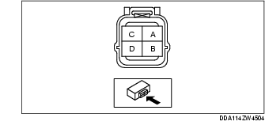
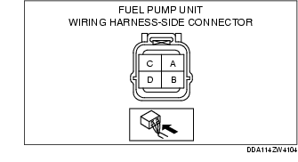

Fuel pump unit inspection [ZY]
Fuel pump Operation Inspection
1. Remove the fuel-filler cap.
2. Start the fuel pump using the following procedure.
Using WDS or equivalent

Without using WDS or equivalent

- • Short the specified terminal as shortening the wrong terminal of the main fuse block may cause malfunctions.

3. Verify that operation sound is heard from the fuel pump.
- • If the operation sound cannot be verified, measure the voltage at fuel pump wiring harness-side connector terminal B.
Continuity Inspection
1. Disconnect the negative battery cable.
2. Disconnect the fuel pump unit connector.
3. Inspect for continuity between fuel pump unit connector terminals B and D.

- • If there is continuity, carry out the "Circuit Open/Short Inspection".
- • If there is no continuity, replace the fuel pump. (See FUEL PUMP UNIT REMOVAL/INSTALLATION [ZY].)
Circuit Open/Short Inspection
1. Inspect the following wiring harnesses for an open or short circuit. (Continuity check)

Open circuit
- • If there is no continuity, the circuit is open. Repair or replace the wiring harness.
- - Fuel pump unit terminal B and fuel pump relay terminal C
- - Fuel pump unit terminal D and body GND
Short circuit
- • If there is continuity, the circuit is shorted. Repair or replace the wiring harness.
- - Fuel pump unit terminal B and body GND
- - Fuel pump unit terminal D and power supply
Fuel Static Pressure Inspection
- • The fuel static pressure inspection cannot be performed because the pressure regulator is integrated with the fuel pump unit.